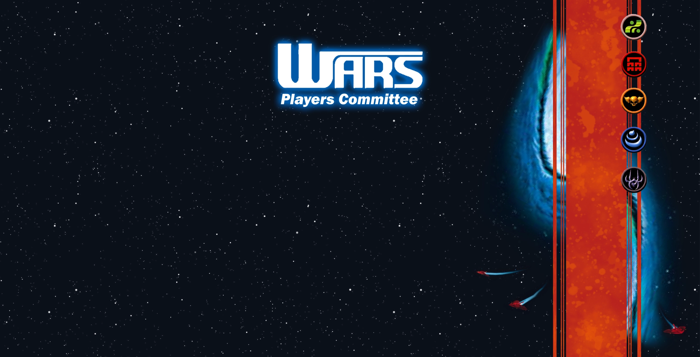

Menu
Home
Factions
Earther
Gongen
Maverick
Shi
Quay
Rules
Tournament Resources
Card Database
New & Returning Players
Social Links
Facebook Group
Decipher Fans Discord
About the PC
A Fan Created Coordinating body for the WARS Trading Card Game.
refreshed
February 28, 2026
